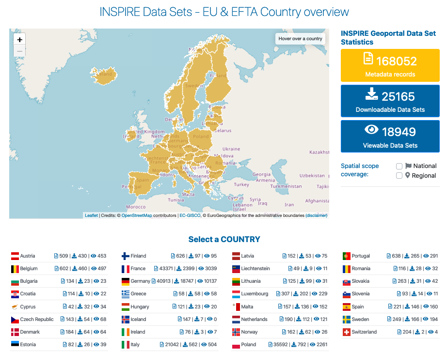

INSPIRE¶
INSPIRE指令 は、環境政策を目的とした欧州連合の空間データインフラ(SDI)の構築を目的としています。この欧州SDIは、公共セクターの組織間で環境空間情報を共有することを可能にし、空間情報への一般市民のアクセスを容易にし、境界を超えた政策決定を支援します。INSPIREは、EUの27加盟国によって設立・運営されている空間情報インフラに基づいています。この指令 (全文 参照)は、 2007年5月15日に発効し、さまざまな段階で実装されています。2021年までには完全な実装が必要です。INSPIRE は、主に OGC と ISO によって開発された国際標準に基づく技術レベルにあります。
INSPIRE指令の対象となるデータセットは、34の分野横断的なカテゴリ名 空間データテーマ でグループ化されています。これらは、指令の付属文書で定義され、2つの主要なデータタイプを反映しています。付属文書Iと部分的に付属文書IIに提示されている地理空間参照データで、残りの領域固有のテーマ(付属文書IIIと部分的に付属文書II)が参照できる位置参照を定義しています。
データがINSPIRE指令の範囲内にある公共機関は、次のことを行う必要があります。

メタデータを使用して文書化します。
ネットワークサービスを通じて公開します: デイスカバリーサービス(データを発見するため)、ビューサービス(データにアクセスするため)、ダウンロードサービス(データをダウンロードするため)。
各テーマで定義されている common data models に従って、空間データセットを整備します。
{kind=link}
現在、7000を超えるヨーロッパの公共機関がINSPIREにデータを提供しています。その多くは、OSGeoのソフトウェアプロジェクトを利用しています。OSGeoLive は、ますます、複数のアプリケーションドメインでのソフトウエアのチュートリアルで、多くの欧州のサンプルデータを使用した例の整備を通じて、INSPIRE実装を容易にしていきます。さらに、OSGeo wikiの下に INSPIREの専用ページ が維持されており、INSPIREの法的および技術的側面の概要と選ばれたユースケースおよび実装者が使用できるOSGeoソフトウェアプロジェクトの概要を提供しています。
欧州委員会の合同調査センター(JRC: Joint Research Centre) は、いくつかの中央ソフトウエアコンポーネントを開発して維持しています。これらのコンポーネントは、INSPIRE導入プロセスにおいて加盟国を支援するものです:
オープンソースの Re3gistry をベースとして、 INSPIRE Registry は、テーマ、コードリスト、アプリケーションスキーマなどの INSPIRE リソースの一意の識別子と記述を管理します;
オープンソースの ETF testing framework をベースとして、 INSPIRE Reference Validator は、メタデータ、データセット、サービスがINSPIRE要請に適合しているか、テストできるようになります;
INSPIRE Geoportal は、INSPIREの元で加盟国が、全てのデータセット発見、アクセス、ダウンロードできるようにしてくれます。